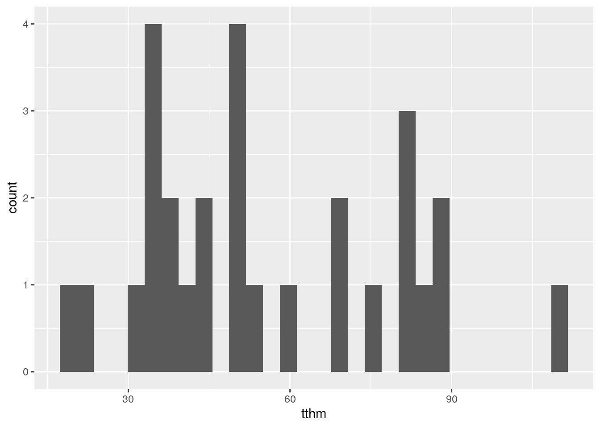

Chapter 4 Inference and Decision-Making with Multiple Parameters
We saw in 2.2.3 that if the data followed a normal distribution and that the variance was known, that the normal distribution was the conjugate prior distribution for the unknown mean. In this chapter, we will focus on the situation when the data follow a normal distribution with an unknown mean, but now consider the case where the variance is also unknown. When the variance \(\sigma^2\) of the data is also unknown, we need to specify a joint prior distribution \(p(\mu, \sigma^2)\) for both the mean \(\mu\) and the variance \(\sigma^2\). We will introduce the conjugate normal-gamma family of distributions where the posterior distribution is in the same family as the prior distribution and leads to a marginal Student t distribution for posterior inference for the mean of the population.
We will present Monte Carlo simulation for inference about functions of the parameters as well as sampling from predictive distributions, which can also be used to assist with prior elicitation. For situations when limited prior information is available, we discuss a limiting case of the normal-gamma conjugate family, the reference prior, leading to a prior that can be used for a default or reference analysis. Finally, we will show how to create a more flexible and robust prior distribution by using mixtures of the normal-gamma conjugate prior, the Jeffreys-Zellner-Siow prior. For inference in this case we will introduce Markov Chain Monte Carlo, a powerful simulation method for Bayesian inference.
It is assumed that the readers have mastered the concepts of one-parameter normal-normal conjugate priors. Calculus is not required for this section; however, for those who are comfortable with calculus and would like to go deeper, we shall present optional sections with more details on the derivations.
Also note that some of the examples in this section use an updated version of the bayes_inference function.
If your local output is different from what is seen in this chapter, or the provided code fails to run for you please update to the most recent version of the statsr package.
4.1 The Normal-Gamma Conjugate Family
You may take the safety of your drinking water for granted, however, residents of Flint, Michigan were outraged over reports that the levels of a contaminant known as TTHM exceeded federal allowance levels in 2014. TTHM stands for total trihalomethanes, a group of chemical compounds first identified in drinking water in the 1970’s. Trihalomethanes are formed as a by-product from the reaction of chlorine or bromine with organic matter present in the water being disinfected for drinking. THMs have been associated through epidemiological studies with some adverse health effects and many are considered carcinogenic. In the United States, the EPA limits the total concentration of the four chief constituents (chloroform, bromoform, bromodichloromethane, and dibromochloromethane), referred to as total trihalomethanes (TTHM), to 80 parts per billion in treated water.
Since violations are based on annual running averages, we are interested in inference about the mean TTHM level based on measurements taken from samples.
In Section 2.2.3 we described the normal-normal conjugate family for inference about an unknown mean \(\mu\) when the data \(Y_1, Y_2, \ldots, Y_n\) were assumed to be a random sample of size \(n\) from a normal population with a known standard deviation \(\sigma\), however, it is more common in practice to have data where the variability of observations is unknown, as in the example with TTHM. Conceptually, Bayesian inference for two (or more) parameters is not any different from the case with one parameter. As both \(\mu\) and \(\sigma^2\) unknown, we will need to specify a joint prior distribution, \(p(\mu, \sigma^2)\) to describe our prior uncertainty about them. As before, Bayes Theorem leads to the posterior distribution for \(\mu\) and \(\sigma^2\) given the observed data to take the form
\[\begin{equation} p(\mu, \sigma^2 \mid y_1, \ldots, y_n) = \frac{p(y_1, \ldots, y_n \mid \mu, \sigma^2) \times p(\mu, \sigma^2)} {\text{normalizing constant}}. \end{equation}\] The likelihood function for \(\mu, \sigma^2\) is proportional to the sampling distribution of the data, \({\cal L}(\mu, \sigma^2) \propto p(y_1, \ldots, y_n \mid \mu, \sigma^2)\) so that the posterior distribution can be re-expressed in proportional form \[\begin{equation} p(\mu, \sigma^2 \mid y_1, \ldots, y_n) \propto {\cal L}(\mu, \sigma^2) p(\mu, \sigma^2). \end{equation}\]
As in the earlier chapters, conjugate priors are appealing as there are nice expressions for updating the prior to obtain the posterior distribution using summaries of the data. In the case of two parameters or more parameters a conjugate pair is a sampling model for the data and a joint prior distribution for the unknown parameters such that the joint posterior distribution is in the same family of distributions as the prior distribution. In this case our sampling model is built on the assumption that the data are a random sample of size \(n\) from a normal population with mean \(\mu\) and variance \(\sigma^2\), expressed in shorthand as
\[\begin{aligned} Y_1, \ldots Y_n \mathrel{\mathop{\sim}\limits^{\rm iid}} \textsf{Normal}(\mu, \sigma^2) \end{aligned}\] where the ‘iid’ above the distribution symbol ‘\(\sim\)’ indicates that each of the observations are independent of the others (given \(\mu\) and \(\sigma^2\)) and are identically distributed. Under this assumption, the sampling distribution of the data is the product of independent normal distributions with mean \(\mu\) and variance \(\sigma^2\), \[\begin{equation} p(y_1, \ldots, y_n \mid \mu, \sigma^2) = \prod_{i = 1}^n \frac{1}{\sqrt{2 \pi \sigma^2}} e^{\left\{- \frac{1}{2} \left(\frac{y_i - \mu}{\sigma}\right)^2\right\}} \end{equation}\] which, after some algebraic manipulation and simplification, leads to a likelihood function for \(\mu\) and \(\sigma^2\) that is proportional to \[ \begin{aligned} {\cal L}(\mu, \sigma^2) \propto (\sigma^2)^{-n/2} \times \exp{ \left\{ -\frac{1}{2} \frac{\sum_{i = 1}^n(y_i - \bar{y})^2 }{\sigma^2} \right\}} & \times \exp{ \left\{ -\frac{1}{2} \frac{n (\bar{y} - \mu)^2 }{\sigma^2} \right\}} \\ \text{function of $\sigma^2$ and data} & \times \text{function of $\mu$, $\sigma^2$ and data} \end{aligned} \] which depends on the data only through the sum of squares \(\sum_{i = 1}^n(y_i - \bar{y})^2\) (or equivalently the sample variance \(s^2 = \sum_{i = 1}^n(y_i - \bar{y})^2/(n-1)\)) and the sample mean \(\bar{y}\). From the expression for the likelihood, we can see that the likelihood factors into two pieces: a term that is a function of \(\sigma^2\) and the data; and a term that involves \(\mu\), \(\sigma^2\) and the data.
Based on the factorization in the likelihood and the fact that any joint distribution for \(\mu\) and \(\sigma^2\) can be expressed as \[ p(\mu, \sigma^2) = p(\mu \mid \sigma^2) \times p(\sigma^2) \] as the product of a conditional distribution for \(\mu\) given \(\sigma^2\) and a marginal distribution for \(\sigma^2\), this suggests that the posterior distribution should factor as the product of two conjugate distributions. Perhaps not surprisingly, this is indeed the case.
4.1.1 Conjugate Prior for \(\mu\) and \(\sigma^2\)
In Section 2.2.3, we found that for normal data, the conjugate prior distribution for \(\mu\) when the standard deviation \(\sigma\) was known was a normal distribution. We will build on this to specify a conditional prior distribution for \(\mu\) as a normal distribution \[\begin{equation} \mu \mid \sigma^2 \sim \textsf{N}(m_0, \sigma^2/n_0) \tag{4.1} \end{equation}\] with hyper-parameters \(m_0\), the prior mean for \(\mu\), and \(\sigma^2/n_0\) the prior variance. While previously we represented the prior variance as a fixed constant, \(\tau^2\), in this case we will replace \(\tau^2\) with a multiple of \(\sigma^2\). Because \(\sigma\) has the same units as the data, the presence of \(\sigma\) in the prior variance automatically scales the prior for \(\mu\) based on the same units. This is important, for example, if we were to change the measurement units from inches to centimeters or seconds to hours, as the prior will be re-scaled automatically. The hyper-parameter \(n_0\) is unitless, but is used to express our prior precision about \(\mu\) relative to the level of “noise,” captured by \(\sigma^2\), in the data. Larger values of \(n_0\) indicate that we know the mean with more precision (relative to the variability in observations) with smaller values indicating less precision or more uncertainty. We will see later how the hyper-parameter \(n_0\) may be interpreted as a prior sample size. Finally, while we could use a fixed value \(\tau^2\) as the prior variance in a conditional conjugate prior for \(\mu\) given \(\sigma^2\), that does not lead to a joint conjugate prior for \(\mu\) and \(\sigma^2\).
As \(\sigma^2\) is unknown, a Bayesian would use a prior distribution to describe the uncertainty about the variance before seeing data. Since the variance is non-negative, continuous, and with no upper limit, based on the distributions that we have seen so far a gamma distribution might appear to be a candidate prior for the variance,. However, that choice does not lead to a posterior distribution in the same family or that is recognizable as any common distribution. It turns out that the the inverse of the variance, which is known as the precision, has a conjugate gamma prior distribution.
For simplification let’s express the precision (inverse variance) as a new parameter, \(\phi = 1/\sigma^2\). Then the conjugate prior for \(\phi\), \[\begin{equation} \phi \sim \textsf{Gamma}\left(\frac{v_0}{2}, \frac{v_0 s^2_0}{2} \right) \tag{4.2} \end{equation}\] is a gamma distribution with shape parameter \(v_0/2\) and rate parameter of \({v_0 s^2_0}/{2}\). Given the connections between the gamma distribution and the Chi-Squared distribution, the hyper-parameter \(v_0\) may be interpreted as the prior degrees of freedom. The hyper-parameter \(s^2_0\) may be interpreted as a prior variance or initial prior estimate for \(\sigma^2\). Equivalently, we may say that the inverse of the variance has a \[1/\sigma^2 \sim \textsf{Gamma}(v_0/2, s^2_0 v_0/2)\]
gamma distribution to avoid using a new symbol . Together the conditional normal distribution for \(\mu\) given \(\sigma^2\) in (4.1) and the marginal gamma distribution for \(\phi\) in (4.2) lead to a joint distribution for the pair \((\mu, \phi)\) that we will call the normal-gamma family of distributions: \[\begin{equation}(\mu, \phi) \sim \textsf{NormalGamma}(m_0, n_0, s^2_0, v_0) \tag{4.3} \end{equation}\] with the four hyper-parameters \(m_0\), \(n_0\), \(s^2_0\), and \(v_0\).
We can obtain the density for the (\(m_0, n_0, \nu_0, s^2_0\)) family of distributions for \(\mu, \phi\) by multiplying the conditional normal distribution for \(\mu\) times the marginal gamma distribution for \(\phi\): \[\begin{equation} p(\mu, \phi) = \frac{(n_0 \phi)^{1/2}} {\sqrt{2\pi}} e^{- \frac{\phi n_0}{2} (\mu -m_0)^2} \frac{1}{\Gamma(\nu_0/2)} (\nu_0 s^2_0 )^{\nu_0/2 -1} e^{- \phi \frac{\nu_0 s^2_0} {2}} \label{eq:NG} \end{equation}\]
The joint conjugate prior has simple rules for updating the prior hyper-parameters given new data to obtain the posterior hyper-parameters due to conjugacy.
4.1.2 Conjugate Posterior Distribution
As a conjugate family, the posterior distribution of the pair of parameters (\(\mu, \phi\)) is in the same family as the prior distribution when the sample data arise from a normal distribution, that is the posterior is also normal-gamma \[\begin{equation} (\mu, \phi) \mid \text{data} \sim \textsf{NormalGamma}(m_n, n_n, s^2_n, v_n) \end{equation}\] where the subscript \(n\) on the hyper-parameters indicates the updated values after seeing the \(n\) observations from the sample data. One attraction of conjugate families is there are relatively simple updating rules for obtaining the new hyper-parameters: \[\begin{eqnarray*} m_n & = & \frac{n \bar{Y} + n_0 m_0} {n + n_0} \\ & \\ n_n & = & n_0 + n \\ v_n & = & v_0 + n \\ s^2_n & = & \frac{1}{v_n}\left[ s^2 (n-1) + s^2_0 v_0 + \frac{n_0 n}{n_n} (\bar{y} - m_0)^2 \right]. \end{eqnarray*}\] Let’s look more closely to try to understand the updating rules. The updated hyper-parameter \(m_n\) is the posterior mean for \(\mu\); it is also the mode and median. The posterior mean \(m_n\) is a weighted average of the sample mean \(\bar{y}\) and prior mean \(m_0\) with weights \(n/(n + n_0\) and \(n_0/(n + n_0)\) that are proportional to the precision in the data, \(n\), and the prior precision, \(n_0\), respectively.
The posterior sample size \(n_n\) is the sum of the prior sample size \(n_0\) and the sample size \(n\), representing the combined precision after seeing the data for the posterior distribution for \(\mu\). The posterior degrees of freedom \(v_n\) are also increased by adding the sample size \(n\) to the prior degrees of freedom \(v_0\).
Finally, the posterior variance hyper-parameter \(s^2_n\) combines three sources of information about \(\sigma^2\) in terms of sums of squared deviations. The first term in
the square brackets is the sample variance times the sample degrees of
freedom, \(s^2 (n-1) = \sum_{i=1}^n (y_i - \bar{y})^2\), which is the sample sum of squares. Similarly, we may view the second term as a sum of squares based on prior data, where \(s^2_0\) was an estimate of \(\sigma^2\). The squared difference of the sample mean and prior mean in the last term also provides an estimate of \(\sigma^2\), where a large value of \((\bar{y} - \mu_0)^2\) increases the posterior sum of squares \(v_n s^2_n\).
If the sample mean is far from our prior mean, this increases the probability that \(\sigma^2\) is large. Adding these three sum of squares provides the posterior sum of square, and dividing by the posterior
posterior degrees of freedom we obtain the new hyper-parameter \(s^2_n\), which is an estimate of \(\sigma^2\) combining the sources of variation from the prior and the data.
The joint posterior distribution for the pair \(\mu\) and \(\phi\) \[(\mu, \phi) \mid \text{data}\sim \textsf{NormalGamma}(m_n, n_n, s^2_n, v_n)\] is in the normal-gamma family, and is equivalent to a hierarchical model specified in two stages: in the first stage of the hierarchy the inverse variance or precision marginally has a gamma distribution, \[ 1/\sigma^2 \mid \text{data}\sim \textsf{Gamma}(v_n/2, s^2_n v_n/2) \] and in the second stage, \(\mu\) given \(\sigma\)
\[\mu \mid \text{data}, \sigma^2 \sim \textsf{Normal}(m_n, \sigma^2/n_n)\] has a conditional normal distribution. We will see in the next chapter how this representation is convenient for generating samples from the posterior distribution.
4.1.3 Marginal Distribution for \(\mu\): Student \(t\)
The joint normal-gamma posterior summarizes our current knowledge about \(\mu\) and \(\sigma^2\), however, we are generally interested in inference about \(\mu\) unconditionally as \(\sigma^2\) is unknown. This marginal inference requires the unconditional or marginal distribution of \(\mu\) that `averages’ over the uncertainty in \(\sigma\). For continuous variables like \(\sigma\), this averaging is performed by integration leading to a Student \(t\) distribution.
The standardized Student \(t\)-distribution \(\textsf{t}_\nu\) with \(\nu\) degrees of freedom is defined to be \[ p(t) = \frac{1}{\sqrt{\pi\nu}}\frac{\Gamma(\frac{\nu+1}{2})}{\Gamma(\frac{\nu}{2})}\left(1 + \frac{t^2}{\nu}\right)^{-\frac{\nu+1}{2}} \] where the \(\Gamma(\cdot)\) is the Gamma function defined earlier in Equation (2.4). The standard Student’s \(t\)-distribution is centered at 0 (the location parameter), with a scale parameter equal to 1, like in a standard normal, however, there is an additional parameter, \(\nu\), the degrees of freedom parameter.
The Student \(t\) distribution is similar to the normal distribution as it is symmetric about the center and bell shaped, however, the tails of the distribution are fatter or heavier than the normal distribution and therefore, it is a little “shorter” in the middle as illustrated in Figure ??
Figure 4.1: Standard normal and Student t densities.
Similar to the normal distribution, we can obtain other Student \(t\) distributions by changing the center of the distribution and changing the scale. A Student t distribution with a location \(m\) and scale \(s\) with \(v\) degrees of freedom is denoted as \(\textsf{t}(v, m, s^2)\), with the standard Student t as a special case, \(\textsf{t}(\nu, 0, 1)\).
The density for a \(X \sim \textsf{t}(v, m, s^2)\) random variable is \[\begin{equation} p(x) =\frac{\Gamma\left(\frac{v + 1}{2} \right)} {\sqrt{\pi v} s \,\Gamma\left(\frac{v}{2} \right)} \left(1 + \frac{1}{v}\left(\frac{x - m} {s} \right)^2 \right)^{-\frac{v+1}{2}} \tag{4.4} \end{equation}\] and by subtracting the location \(m\) and dividing by the scale \(s\): \[ \frac{X - m}{s} \equiv t \sim \textsf{t}(v, 0 , 1) \] we can obtain the distribution of the standardized Student \(t\) distribution with degrees of freedom \(v\), location \(0\) and scale \(1\). This latter representation allows us to use standard statistical functions for posterior inference such as finding credible intervals.
We are now ready for our main result for the marginal distribution for \(\mu\).Definition 1.1 If \(\mu\) and \(1/\sigma^2\) have a \(\textsf{NormalGamma}(m_n, n_n, v_n, s^2_n)\) posterior distribution, then \(\mu\) given the data has a distribution, \(\textsf{t}(v_n, m_n, s^2_n/n_n)\), expressed as \[ \mu \mid \text{data}\sim \textsf{t}(v_n, m_n, s^2_n/n_n) \] with degrees of freedom \(v_n\), location parameter, \(m_n\), and squared scale parameter, \(s^2_n/n_n\), that is the posterior variance parameter divided by the posterior sample size.
The parameters \(m_n\) and \(s^2_n\) play similar roles in determining the center and spread of the distribution, as in the normal distribution, however, as Student \(t\) distributions with degrees of freedom less than 3 do not have a mean or variance, the parameter \(m_n\) is called the location or center of the distribution and the \(s_n/\sqrt{n}\) is the scale.
Let’s use this result to find credible intervals for \(\mu\).
4.1.4 Credible Intervals for \(\mu\)
To find a credible interval for the mean \(\mu\), we will use the marginal posterior distribution for \(\mu\) as illustrated in Figure 4.2. Since the Student \(t\) distribution of \(\mu\) is unimodal and symmetric, the shortest 95 percent credible interval or the Highest Posterior Density interval, HPD for short, is the interval given by the dots at the lower endpoint L and upper endpoint U where the heights of the density at L and U are equal and all other values for \(\mu\) have higher posterior density. The probability that \(\mu\) is in the interval (L, U) (the shaded area) equals the desired probability, e.g. 0.95 for a 95% credible interval.
Figure 4.2: Highest Posterior Density region.
Using the standardized Student \(t\) distribution and some algebra, these values are \[ \begin{aligned} L & = m_n + t_{0.025}\sqrt{s^2_n/n_n} \\ U & = m_n + t_{0.975}\sqrt{s^2_n/n_n} \end{aligned} \] or the posterior mean (our point estimate) plus quantiles of the standard \(t\) distribution times the scale. Because of the symmetry in the Student \(t\) distribution, the credible interval for \(\mu\) is \(m_n \pm t_{0.975}\sqrt{s^2_n/n_n}\), which is similar to the expressions for confidence intervals for the mean.
4.1.5 Example: TTHM in Tapwater
A municipality in North Carolina is interested in estimating the levels of TTHM in their drinking water. The data can be loaded from the statsr package in R, where the variable of interest, tthm is measured in parts per billion.
library(statsr)
data(tapwater)
glimpse(tapwater)## Rows: 28
## Columns: 6
## $ date <fct> 2009-02-25, 2008-12-22, 2008-09-25, 2008-05-14, 2008-04-14…
## $ tthm <dbl> 34.38, 39.33, 108.63, 88.00, 81.00, 49.25, 75.00, 82.86, 8…
## $ samples <int> 8, 9, 8, 8, 2, 8, 6, 7, 8, 4, 4, 4, 4, 6, 4, 8, 10, 10, 10…
## $ nondetects <int> 0, 0, 0, 0, 0, 0, 0, 0, 0, 0, 0, 0, 0, 0, 0, 0, 0, 0, 0, 0…
## $ min <dbl> 32.00, 31.00, 85.00, 75.00, 81.00, 26.00, 70.00, 70.00, 80…
## $ max <dbl> 39.00, 46.00, 120.00, 94.00, 81.00, 68.00, 80.00, 90.00, 9…Using historical prior information about TTHM from the municipality, we will adopt a normal-gamma prior distribution, \(\textsf{NormalGamma}(35, 25, 156.25, 24)\) with a prior mean of 35 parts per billion, a prior sample size of 25, an estimate of the variance of 156.25 with degrees of freedom 24. In Section 4.3, we will describe how we arrived at these values.
Using the summaries of the data, \(\bar{Y} = 55.5\), variance \(s^2 = 540.7\) and sample size of \(n = 28\) with the prior hyper-parameters from above, the posterior hyper-parameters are updated as follows: \[\begin{eqnarray*} n_n & = & 25 + 28 = 53\\ m_n & = & \frac{28 \times55.5 + 25 \times35}{53} = 45.8 \\ v_n & = & 24 + 28 = 52 \\ s^2_n & = & \frac{(n-1) s^2 + v_0 s^2_0 + n_0 n (m_0 - \bar{Y})^2 /n_n }{v_n} \\ & = & \frac{1}{52} \left[27 \times 540.7 + 24 \times 156.25 + \frac{25 \times 28}{53} \times (35 - 55.5)^2 \right] = 459.9 \\ \end{eqnarray*}\] in the conjugate \(\textsf{NormalGamma}(45.8, 53, 459.9, 52)\) posterior distribution that now summarizes our uncertainty about \(\mu\) and \(\phi\) (\(\sigma^2\)) after seeing the data.
We can obtain the updated hyper-parameters in R using the following code in R
# prior hyper-parameters
m_0 = 35; n_0 = 25; s2_0 = 156.25; v_0 = n_0 - 1
# sample summaries
Y = tapwater$tthm
ybar = mean(Y)
s2 = var(Y)
n = length(Y)
# posterior hyperparameters
n_n = n_0 + n
m_n = (n*ybar + n_0*m_0)/n_n
v_n = v_0 + n
s2_n = ((n-1)*s2 + v_0*s2_0 + n_0*n*(m_0 - ybar)^2/n_n)/v_nUsing the following code in R the 95%
credible interval for the tap water data may be obtained using the Student \(t\) quantile function qt.
m_n + qt(c(0.025, 0.975), v_n)*sqrt(s2_n/n_n)## [1] 39.93192 51.75374The qt function takes two arguments: the first is the desired quantiles, while the second is the degrees of freedom. Both arguments may be vectors, in which case, the result will be a vector.
While we can calculate the interval directly as above, we have provided the bayes_inference function in the statsr package to calculate the posterior hyper-parameters, credible intervals and plot the posterior density and the HPD interval given the raw data:
bayes_inference(tthm, data=tapwater, prior="NG",
mu_0 = m_0, n_0=n_0, s_0 = sqrt(s2_0), v_0 = v_0,
stat="mean", type="ci", method="theoretical",
show_res=TRUE, show_summ=TRUE, show_plot=FALSE)## Single numerical variable
## n = 28, y-bar = 55.5239, s = 23.254
## (Assuming proper prior: mu | sigma^2 ~ N(35, *sigma^2/25)
## (Assuming proper prior: 1/sigma^2 ~ G(24/2,156.25*24/2)
##
## Joint Posterior Distribution for mu and 1/sigma^2:
## N(45.8428, sigma^2/53) G(52/2, 8.6769*52/2)
##
## Marginal Posterior for mu:
## Student t with posterior mean = 45.8428, posterior scale = 2.9457 on 52 df
##
## 95% CI: (39.9319 , 51.7537)Let’s try to understand the arguments to the function. The first argument of the function is the variable of interest, tthm, while the second argument is a dataframe with the variable. The argument prior="NG" indicates that we are using a normal-gamma prior; later we will present alternative priors. The next two lines provide our prior hyper-parameters. The line with stat="mean", type="ci" indicate that we are interested in inference about the population mean \(\mu\) and to calculate a credible interval for \(\mu\). The argument method = theoretical indicates that we will use the exact quantiles of the Student \(t\) distribution to obtain our posterior credible intervals. Looking at the output the credible interval agrees with the interval we calculated from the summaries using the t quantiles. The other arguments are logical variables to toggle on/off the various output. In this case we have suppressed producing the plot of the posterior distribution using the option show_plot=FALSE, however, setting this to TRUE produces the density and credible interval shown in Figure @ref{fig:tapwater-post-mu}.
How do we interpret these results? Based on the updated posterior, we find that there is a 95% chance that the mean TTHM concentration is between 39.9 parts per billion and 51.8 parts per billion, suggesting that for this period that the municipality is in compliance with the limits.
ggplot(data=tapwater, aes(x=tthm)) + geom_histogram()## `stat_bin()` using `bins = 30`. Pick better value with `binwidth`.
4.1.6 Section Summary
The normal-gamma conjugate prior for
inference about an unknown mean and variance for samples from a normal
distribution allows simple expressions for updating prior beliefs given the data. The joint normal-gamma distribution leads to the
Student \(t\) distribution for inference about \(\mu\) when \(\sigma^2\) is unknown. The Student \(t\) distribution can be used to provide
credible intervals for \(\mu\) using R or other software that provides quantiles of a standard \(t\) distribution.
For the energetic learner who is comfortable with calculus, the optional material at the end of this section provides more details on how the posterior distributions were obtained and other results in this section.
For those that are ready to move on, we will introduce Monte Carlo sampling in the next section; Monte Carlo sampling is a simulation method that will allow us to approximate distributions of transformations of the parameters without using calculus or change of variables, as well as assist exploratory data analysis of the prior or posterior distributions.
4.1.7 (Optional) Derivations
From Bayes Theorem we have that the joint posterior distribution is proportional to the likelihood of the parameters times the joint prior distribution \[\begin{equation} p(\mu, \sigma^2 \mid y_1, \ldots, y_n) \propto {\cal L}(\mu, \sigma^2) p(\mu, \sigma^2). \end{equation}\] where the likelihood function for \(\mu\) and \(\sigma^2\) is proportional to \[ \begin{aligned} {\cal L}(\mu, \sigma^2) \propto (\sigma^2)^{-n/2} \times \exp{ \left\{ -\frac{1}{2} \frac{\sum_{i = 1}^n(y_i - \bar{y})^2 }{\sigma^2} \right\}} & \times \exp{ \left\{ -\frac{1}{2} \frac{n (\bar{y} - \mu)^2 }{\sigma^2} \right\}} \\ \text{function of $\sigma^2$ and data} & \times \text{function of $\mu$, $\sigma^2$ and data} \end{aligned} \] which depends on the data only through the sum of squares \(\sum_{i = 1}^n(y_i - \bar{y})^2\) (or equivalently the sample variance \(s^2 = \sum_{i = 1}^n(y_i - \bar{y})^2/(n-1)\)) and the sample mean \(\bar{y}\). Since the likelihood function for \((\mu, \phi)\) is obtained by just substituting \(1/\phi\) for \(\sigma^2\), the likelihood may be re-expressed as \[\begin{equation} {\cal L}(\mu, \phi) \propto \phi^{n/2} \times \exp{ \left\{ -\frac{1}{2} \phi (n-1) s^2 \right\}} \times \exp{ \left\{ -\frac{1}{2} \phi n (\bar{y} - \mu)^2 \right\}}. \end{equation}\]
This likelihood may be obtained also be obtained by using the sampling distribution for the summary statistics, where \[\bar{Y} \mid \mu, \phi \sim \textsf{Normal}(\mu, 1/(\phi n))\] and is independent of the sample variance (conditional on \(\phi\)) and has a gamma distribution \[ s^2 \mid \phi \sim \textsf{Gamma}\left(\frac{n - 1}{2}, \frac{(n-1) \phi}{2}\right) \] with degrees of freedom \(n-1\) and rate \((n-1) \phi/2\); the likelihood is the product of the two sampling distributions: \({\cal{L}}(\mu, \phi) \propto p(s^2 \mid \phi) p(\bar{Y} \mid \phi)\).
Bayes theorem in proportional form leads to the joint posterior distribution \[\begin{aligned} p(\mu, \phi \mid \text{data}) \propto & {\cal{L}}(\mu, \phi) p(\phi) p(\mu \mid \phi) \\ = & \phi^{(n-1)/2)} \exp\left\{ - \frac{ \phi (n-1) s^2 }{2}\right\} \text{ (sampling distribution for $\phi$) }\\ & \times (n\phi)^{1/2} \exp\left\{- \frac 1 2 n \phi (\bar{y} - \mu)^2 \right\} \text{ ( sampling distribution for $\mu$)} \\ & \times \phi^{\nu_0/2 -1} \exp\{- \frac{ \phi \nu_0 s^2_0}{2}\} \text{ (prior for $\phi$)} \\ & \times (n_0\phi)^{1/2} \frac{1}{\sqrt{(2 \pi)}} \exp\left\{- \frac 1 2 n_0 \phi (\mu - m_0)^2 \right\} \text{ (prior for $\mu$)} \end{aligned} \] where we have ignored constants that do not involve \(\phi\) or \(\mu\). Focusing on all the terms that involve \(\mu\), we can group the lines corresponding to the sampling distribution and prior for \(\mu\) together and using the factorization of likelihood and prior distributions, we may identify that \[p(\mu \mid \phi, \text{data}) \propto \exp\left\{- \frac 1 2 n \phi (\bar{y} - \mu)^2 - \frac 1 2 n_0 \phi (\mu - m_0)^2 \right\} \] where the above expression includes the sum of two quadratic expressions in the exponential. This almost looks like a normal. Can these be combined to form one quadratic expression that looks like a normal density? Yes! This is known as “completing the square.” Taking a normal distribution for a parameter \(\mu\) with mean \(m\) and precision \(\rho\), the quadratic term in the exponential may be expanded as \[\rho \times (\mu - m)^2 = \rho \mu^2 - 2 \rho \mu m + \rho m^2.\] From this we can read off that the precision is the term that multiplies the quadratic in \(\mu\) and the term that multiplies the linear term in \(\mu\) is the product of two times the mean and precision; this means that if we know the precision, we can identify the mean. The last term is the precision times the mean squared, which we will need to fill in once we identify the precision and mean.
For our posterior, we need to expand the quadratics and recombine terms to identify the new precision (the coefficient multiplying the quadratic in \(\mu\)) and the new mean (the linear term) and complete the square so that it may be factored. Any left over terms will be independent of \(\mu\) but may depend on \(\phi\). For our case, after some algebra to group terms we have \[\begin{align*} - \frac 1 2 \left( n \phi (\bar{y} - \mu)^2 + n_0 \phi (\mu - m_0)^2 \right) & = -\frac 1 2 \left(\phi( n + n_0) \mu^2 - 2 \phi \mu (n \bar{y} + n_0 m_0) + \phi (n \bar{y}^2 + n_0 m_0^2) \right) \end{align*}\] where we can read off that the posterior precision is \(\phi(n + n_0) \equiv \phi n_n\). The linear term is not yet of the form of the posterior precision times the posterior mean (times 2), but if we multiply and divide by \(n_n = n + n_0\) it is in the appropriate form \[\begin{equation}-\frac 1 2 \left(\phi( n + n_0) \mu^2 - 2 \phi ( n + n_0) \mu \frac{(n \bar{y} + n_0 m_0) } {n + n_0} + \phi (n \bar{y}^2 + n_0 m_0^2) \right) \label{eq:quad} \end{equation}\] so that we may identify that the posterior mean is \(m_n = (n \bar{y} + n_0 m_0) /(n + n_0)\) which combined with the precision (or inverse variance) is enough to identity the conditional posterior distribution for \(\mu\). We next add the precision times the square of the posterior mean (the completing the square part), but to keep equality, we will need to subtract the term as well: \[ - \frac 1 2 \left( n \phi (\bar{y} - \mu)^2 + n_0 \phi (\mu - m_0)^2 \right) = -\frac 1 2 \left(\phi n_n \mu^2 - 2 \phi n_n \mu m_n + \phi n_n m_n^2 - \phi n_n m_n^2 + \phi (n \bar{y}^2 + n_0 m_0^2) \right) \] which after factoring the quadratic leads to \[\begin{align} - \frac 1 2 \left( n \phi (\bar{y} - \mu)^2 + n_0 \phi (\mu - m_0)^2 \right) = & -\frac 1 2 \left(\phi n_n (\mu - m_n)^2 \right) \\ & -\frac 1 2 \left(\phi (-n_n m_n^2 + n \bar{y}^2 + n_0 m_0^2) \right) \end{align}\] where the first line is the quadratic for the posterior of \(\mu\) given \(\phi\) while the second line includes terms that involve \(\phi\) but that are independent of \(\mu\).
Substituting the expressions, we can continue to simplify the expressions further \[ \begin{aligned} p(\mu, \phi \mid \text{data}) \propto & {\cal{L}}(\mu, \phi) p(\phi) p(\mu \mid \phi) \\ = & \phi^{(n + \nu_0 + 1 )/2 - 1} \exp\left\{ - \frac{ \phi (n-1) s^2 }{2}\right\} \times \exp\left\{- \frac{ \phi \nu_0 s^2_0}{2}\right\} \times \exp\left\{ -\frac 1 2 \left(\phi (-n_n m_n^2 + n \bar{y}^2 + n_0 m_0^2) \right) \right\} \\ & \times \exp \left\{ -\frac 1 2 \left(\phi n_n (\mu - m_n)^2 \right) \right\} \\ = & \phi^{(n + \nu_0)/2 - 1} \exp\left\{ - \frac{\phi}{2} \left( (n-1) s^2 + \nu_0 s^2_0 + \frac{ n_0 n }{n_n} ( m_0 - \bar{y})^2 \right) \right\} \qquad \qquad \text{ (gamma kernel)} \\ & \times (n_n \phi)^{1/2} \exp \left\{ -\frac 1 2 \left(\phi n_n (\mu - m_n)^2 \right) \right\} \qquad \qquad \text{ (normal kernel}) \end{aligned} \] until we can recognize the product of the kernels of a gamma distribution for \(\phi\) \[ \phi \mid \text{data}\sim \textsf{t}(v_n/2, v_n s^2_n/ 2) \] where \(\nu_n = n + \nu_0\) and \(s^2_n = \left((n-1) s^2 + n_0 s^2_0 + (m_0 - \bar{y})^2 n n_0/n_n\right)/\nu_n\) times a normal: and the kernel of a normal for \(\mu\) \[ \mu \mid \phi, \text{data}\sim \textsf{Normal}(m_n, (\phi n_n)^{-1}) \] where \(m_m = (n \bar{y} + n_0 m_0) /(n + n_0)\) a weighted average of the sample mean and the prior mean, and \(n_n = n + n_0\) is the sample and prior combined sample size.
4.1.7.1 Derivation of Marginal Distribution for \(\mu\)
If \(\mu\) given \(\sigma^2\) (and the data) has a normal distribution with mean \(m_m\) and variance \(\sigma^2/n_n\) and \(1/\sigma^2 \equiv \phi\) (given the data) has a gamma distribution with shape parameter \(\nu_n/2\) and rate parameter \(\nu_n s^2_n/2\)
\[\begin{aligned} \mu \mid \sigma^2, \text{data}& \sim \textsf{Normal}(m_m, \sigma^2/n_n) \\ 1/\sigma^2 \mid \text{data}& \sim \textsf{Gamma}(\nu_n/2, \nu_n s^2_n/2) \end{aligned}\] then \[\mu \mid \text{data}\sim \textsf{t}(\nu_n, m_m, s^2_n/n_n)\] a Student \(t\) distribution with mean \(m_m\) and scale \(s^2_n/n_n\) with degrees of freedom \(\nu_n\).
This applies to the prior as well, so that without any data we use the prior hyper-parameters \(m_0\), \(n_0\), \(\nu_0\) and \(s^2_0\) in place of the updated values with the subscript \(n\).
To simplify notation, we’ll substitute \(\phi = 1/\sigma^2\). The marginal distribution for \(\mu\) is obtained by averaging over the values of \(\sigma^2\). Since \(\sigma^2\) takes on continuous values rather than discrete, this averaging is represented as an integral \[\begin{align*} p(\mu \mid \text{data}) & = \int_0^\infty p(\mu \mid \phi, \text{data}) p(\phi \mid \text{data}) d\phi \\ & = \int_0^\infty \frac{1}{\sqrt{2 \pi}} (n_n \phi)^{1/2} e^{\left\{ - \frac{n_n \phi}{2} (\mu - m_n)^2 \right\}} \frac{1}{\Gamma(\nu_n/2)} \left(\frac{\nu_n s^2_n}{2}\right)^{\nu_n/2} \phi^{\nu_n/2 - 1} e^{\left\{- \phi \nu_n s^2_n/2\right\}} \, d\phi \\ & = \left(\frac{n_n}{2 \pi}\right)^{1/2}\frac{1}{\Gamma\left(\frac{\nu_n}{2}\right)} \left(\frac{\nu_n s^2_n}{2}\right)^{\nu_n/2} \int_0^\infty \phi^{(\nu_n +1)/2 - 1} e^{\left\{ - \phi \left( \frac{n_n (\mu - m_n)^2 + \nu_n s^2_n}{2} \right)\right\}} \, d\phi \intertext{where the terms inside the integral are the "kernel" of a Gamma density. We can multiply and divide by the normalizing constant of the Gamma density} p(\mu \mid \text{data}) & = \left(\frac{n_n}{2 \pi}\right)^{1/2}\frac{1}{\Gamma\left(\frac{\nu_n}{2}\right)} \left(\frac{\nu_n s^2_n}{2}\right)^{\nu_n/2} \Gamma\left(\frac{\nu_n + 1}{2}\right) \left( \frac{n_n (\mu - m_n)^2 + \nu_n s^2_n}{2} \right)^{- \frac{\nu_n + 1}{2}} \times\\ & \qquad \int_0^\infty \frac{1}{\Gamma\left(\frac{\nu_n + 1}{2}\right)} \left( \frac{n_n (\mu - m_n)^2 + \nu_n s^2_n}{2} \right)^{ \frac{\nu_n + 1}{2}} \phi^{(\nu_n +1)/2 - 1} e^{\left\{ - \phi \left( \frac{n_n (\mu - m_n)^2 + \nu_n s^2_n}{2} \right)\right\}} \, d\phi \intertext{so that the term in the integral now integrates to one and the resulting distribution is} p(\mu \mid \text{data}) & = \left(\frac{n_n}{2 \pi}\right)^{1/2}\frac{\Gamma\left(\frac{\nu_n + 1}{2}\right) }{\Gamma\left(\frac{\nu_n}{2}\right)} \left(\frac{\nu_n s^2_n}{2}\right)^{\nu_n/2} \left( \frac{n_n (\mu - m_n)^2 + \nu_n s^2_n}{2} \right)^{- \frac{\nu_n + 1}{2}}. \intertext{After some algebra this simplifies to} p(\mu \mid \text{data}) & = \frac{1}{\sqrt{\pi \nu_n s^2_n/n_n}} \frac{\Gamma\left(\frac{\nu_n + 1}{2}\right) } {\Gamma\left(\frac{\nu_n}{2}\right)} \left( 1 + \frac{1}{\nu_n}\frac{(\mu - m_n)^2}{s^2_n/n_n} \right)^{- \frac{\nu_n + 1}{2}} \intertext{and is a more standard representation for a Student $t$ distribution and the kernel of the density is the right most term.} \end{align*}\]
4.2 Monte Carlo Inference
In Section 4.1, we showed how to obtain the conditional posterior distribution for the mean of a normal population given the variance and the marginal posterior distribution of the precision (inverse variance). The marginal distribution of the mean, which “averaged over uncertainty” about the unknown variance could be obtained via integration, leading to the Student t distribution that was used for inference about the population mean. However, what if we are interested in the distribution of the standard deviation \(\sigma\) itself, or other transformations of the parameters? There may not be a closed-form expression for the distributions or they may be difficult to obtain.
It turns out that Monte Carlo sampling, however, is an easy way to make an inference about parameters, when we cannot analytically calculate distributions of parameters, expectations, or probabilities. Monte Carlo methods are computational algorithms that rely on repeated random sampling from distributions for making inferences. The name refers to the famous Monte Carlo Casino in Monaco, home to games of chance such as roulette.
4.2.1 Monte Carlo Sampling
Let’s start with a case where we know the posterior distribution. As a quick recap, recall that the joint posterior distribution for the mean \(\mu\) and the precision \(\phi = 1/\sigma^2\) under the conjugate prior for the Gaussian distribution is:
- Conditional posterior distribution for the mean \[\mu \mid \text{data}, \sigma^2 \sim \textsf{Normal}(m_n, \sigma^2/n_n)\]
- Marginal posterior distribution for the precision \(\phi\) or inverse variance: \[1/\sigma^2 = \phi \mid \text{data}\sim \textsf{Gamma}(v_n/2,s^2_n v_n/2)\]
- Marginal posterior distribution for the mean \[\mu \mid \text{data}\sim \textsf{t}(v_n, m_n, s^2_n/n_n)\]
For posterior inference about \(\phi\), we can generate \(S\) random samples from the Gamma posterior distribution:
\[\phi^{(1)},\phi^{(2)},\cdots,\phi^{(S)} \mathrel{\mathop{\sim}\limits^{\rm iid}}\textsf{Gamma}(v_n/2,s^2_n v_n/2)\]
Recall that the term iid stands for independent and identically distributed. In other words, the \(S\) draws of \(\phi\) are independent and identically distributed from the gamma distribution.
We can use the empirical distribution (histogram) from the \(S\) samples to approximate the actual posterior distribution and the sample mean of the \(S\) random draws of \(\phi\) can be used to approximate the posterior mean of \(\phi\). Likewise, we can calculate probabilities, quantiles and other functions using the \(S\) samples from the posterior distribution. For example, if we want to calculate the posterior expectation of some function of \(\phi\), written as \(g(\phi)\), we can approximate that by taking the average of the function, and evaluate it at the \(S\) draws of \(\phi\), written as \(\frac{1}{S}\sum^S_{i=1}g(\phi^{(i)})\).
The approximation to the expectation of the function, \(E[g(\phi \mid \text{data})]\) improves
\[\frac{1}{S}\sum^S_{i=1}g(\phi^{(i)}) \rightarrow E[g(\phi \mid \text{data})]\] as the number of draws \(S\) in the Monte Carlo simulation increases.
4.2.2 Monte Carlo Inference: Tap Water Example
We will apply this to the tap water example from 4.1. First, reload the data and calculate the posterior hyper-parameters if needed.
# Prior
m_0 = 35; n_0 = 25; s2_0 = 156.25; v_0 = n_0 - 1
# Data
data(tapwater); Y = tapwater$tthm
ybar = mean(Y); s2 = var(Y); n = length(Y)
# Posterior Hyper-paramters
n_n = n_0 + n
m_n = (n*ybar + n_0*m_0)/n_n
v_n = v_0 + n
s2_n = ((n-1)*s2 + v_0*s2_0 + n_0*n*(m_0 - ybar)^2/n_n)/v_nBefore generating our Monte Carlo samples, we will set a random seed using the set.seed function in R, which takes a small integer argument.
set.seed(42)This allows the results to be replicated if you re-run the simulation at a later time.
To generate \(1,000\) draws from the gamma posterior distribution using the hyper-parameters above, we use the rgamma function R
phi = rgamma(1000, shape = v_n/2, rate=s2_n*v_n/2)The first argument to the rgamma function is the number of samples, the second is the shape parameter and, by default, the third argument is the rate parameter.
The following code will produce a histogram of the Monte Carlo samples of \(\phi\) and overlay the actual Gamma posterior density evaluated at the draws using the dgamma function in R.
df = data.frame(phi = sort(phi))
df = mutate(df,
density = dgamma(phi,
shape = v_n/2,
rate=s2_n*v_n/2))
ggplot(data=df, aes(x=phi)) +
geom_histogram(aes(x=phi, y=..density..), bins = 50) +
geom_density(aes(phi, ..density..), color="black") +
geom_line(aes(x=phi, y=density), color="orange") +
xlab(expression(phi)) + theme_tufte()
Figure 4.3: Monte Carlo approximation of the posterior distribution of the precision from the tap water example
Figure 4.3 shows the histogram of the \(1,000\) draws of \(\phi\) generated from the Monte Carlo simulation, representing the empirical distribution approximation to the gamma posterior distribution. The orange line represents the actual gamma posterior density, while the black line represents a smoothed version of the histogram.
We can estimate the posterior mean or a 95% equal tail area credible region using the Monte Carlo samples using R
mean(phi)## [1] 0.002165663quantile(phi, c(0.025, 0.975))## 2.5% 97.5%
## 0.001394921 0.003056304The mean of a gamma random variable is the shape/rate, so we can compare the Monte Carlo estimates to the theoretical values
# mean (v_n/2)/(v_n*s2_n/2)
1/s2_n## [1] 0.002174492qgamma(c(0.025, 0.975), shape=v_n/2, rate=s2_n*v_n/2)## [1] 0.001420450 0.003086519where the qgamma function in R returns the desired quantiles provided as the first argument.
We can see that we can estimate the mean accurately to three significant digits, while the quantiles are accurate to two. It increase our accuracy, we would need to increase \(S\).
Exercise Try increasing the number of simulations \(S\) in the Monte Carlo simulation to \(10,000\), and see how the approximation changes.
4.2.3 Monte Carlo Inference for Functions of Parameters
Let’s see how to use Monte Carlo simulations to approximate the distribution of \(\sigma\). Since \(\sigma = 1/\sqrt{\phi}\), we simply apply the transformation to the \(1,000\) draws of \(\phi\) to obtain a random sample of \(\sigma\) from its posterior distribution. We can then estimate the posterior mean of \(\sigma\) by calculating the sample mean of the 1,000 draws.
sigma = 1/sqrt(phi)
mean(sigma) # posterior mean of sigma## [1] 21.80516Similarly, we can obtain a 95% credible interval for \(\sigma\) by finding the sample quantiles of the distribution.
quantile(sigma, c(0.025, 0.975))## 2.5% 97.5%
## 18.08847 26.77474and finally approximate the posterior distribution using a smoothed density estimate

Figure 4.4: Monte Carlo approximation of the posterior distribution of the standard deviation from the tap water example
Exercise
Using the \(10,000\) draws of \(\phi\) for the tap water example, create a histogram for \(\sigma\) with a smoothed density overlay for the tap water example.
4.2.4 Summary
To recap, we have introduced the powerful method of Monte Carlo simulation for posterior inference. Monte Carlo methods provide estimates of expectations, probabilities, and quantiles of distributions from the simulated values. Monte Carlo simulation also allows us to approximate distributions of functions of the parameters, or the transformations of the parameters where it may be difficult to get exact theoretical values.
Next, we will discuss predictive distributions and show how Monte Carlo simulation may be used to help choose prior hyperparameters, using the prior predictive distribution of data and draw samples from the posterior predictive distribution for predicting future observations.
4.3 Predictive Distributions
In this section, we will discuss prior and posterior predictive distributions of the data and show how Monte Carlo sampling from the prior predictive distribution can help select hyper-parameters, while sampling from the posterior predictive distribution can be used for predicting future events or model checking.
4.3.1 Prior Predictive Distribution
We can obtain the prior predictive distribution of the data from the joint distribution of the data and the parameters \((\mu, \sigma^2)\) or equivalently \((\mu, \phi)\), where \(\phi = 1/\sigma^2\) is the precision:
Prior:
\[ \begin{aligned} \phi &\sim \textsf{Gamma}\left(\frac{v_0}{2}, \frac{v_0 s^2_0}{2} \right) \\ \sigma^2 & = 1/\phi \\ \mu \mid \sigma^2 &\sim \textsf{N}(m_0, \sigma^2/n_0) \end{aligned} \]
Sampling model:
\[Y_i \mid \mu,\sigma^2 \mathrel{\mathop{\sim}\limits^{\rm iid}}\textsf{Normal}(\mu, \sigma^2) \]
Prior predictive distribution for \(Y\):
\[\begin{aligned} p(Y) &= \iint p(Y \mid \mu,\sigma^2) p(\mu \mid \sigma^2) p(\sigma^2) d\mu \, d\sigma^2 \\ Y &\sim t(v_0, m_0, s_0^2+s_0^2/n_0) \end{aligned}\]
By averaging over the possible values of the parameters from the prior distribution in the joint distribution, technically done by a double integral, we obtain the Student t as our prior predictive distribution. For those interested, details of this derivation are provided later in an optional section. This distribution of the observables depends only on our four hyper-parameters from the normal-gamma family. We can use Monte Carlo simulation to sample from the prior predictive distribution to help elicit prior hyper-parameters as we now illustrate with the tap water example from earlier.
4.3.2 Tap Water Example (continued)
A report from the city water department suggests that levels of TTHM are expected to be between 10-60 parts per billion (ppb). Let’s see how we can use this information to create an informative conjugate prior.
Prior Mean First, the normal distribution and Student t distributions are symmetric around the mean or center parameter, so we will set the prior mean \(\mu\) to be at the midpoint of the interval 10-60, which would lead to \[m_0 = (60+10)/2 = 35\] as our prior hyper-parameter \(m_0\).
Prior Variance Based on the empirical rule for bell-shaped distributions, we would expect that 95% of observations are within plus or minus two standard deviations from the mean, \(\pm 2\sigma\) of \(\mu\). Using this we expect that the range of the data should be approximately \(4\sigma\). Using the values from the report, we can use this to find our prior estimate of \(\sigma\), \(s_0 = (60-10)/4 = 12.5\) or \[s_0^2 = [(60-10)/4]^2 = 156.25\]
Prior Sample Size and Degrees of Freedom To complete the specification, we also need to choose the prior sample size \(n_0\) and degrees of freedom \(v_0\). For a sample of size \(n\), the sample variance has \(n-1\) degrees of freedom. Thinking about a possible historic set of data of size \(n_0\) that led to the reported interval, we will adopt that rule to obtain the prior degrees of freedom \(v_0 = n_0 - 1\), leaving only the prior sample size to be determined. We will draw samples from the prior predictive distribution and modify \(n_0\) so that the simulated data agree with our prior assumptions.
4.3.3 Sampling from the Prior Predictive in R
The following R code shows a simulation from the predictive distribution with the prior sample size \(n_0 = 2\). Please be careful to not confuse the prior sample size, \(n_0\), that represents the precision of our prior information with the number of Monte Carlo simulations, \(S = 10000\), that are drawn from the distributions. These Monte Carlo samples are used to estimate quantiles of the prior predictive distribution and a large value of \(S\) reduces error in the Monte Carlo approximation.
m_0 = (60+10)/2; s2_0 = ((60-10)/4)^2;
n_0 = 2; v_0 = n_0 - 1
set.seed(1234)
S = 10000
phi = rgamma(S, v_0/2, s2_0*v_0/2)
sigma = 1/sqrt(phi)
mu = rnorm(S, mean=m_0, sd=sigma/(sqrt(n_0)))
Y = rnorm(S, mu, sigma)
quantile(Y, c(0.025,0.975))## 2.5% 97.5%
## -140.1391 217.7050Let’s try to understand the code. After setting the prior hyper-parameters and random seed, we begin by simulating \(\phi\) from its gamma prior distribution. We then transform \(\phi\) to calculate \(\sigma\). Using the draws of \(\sigma\), we feed that into the rnorm function to simulate \(S\) values of \(\mu\) for each value of \(\sigma\). The Monte Carlo draws of \(\mu,\sigma\) are used to generate \(S\) possible values of TTHM denoted by \(Y\). In the above code we are exploiting that all of the functions for simulating from distributions can be vectorized, i.e. we can provide all \(S\) draws of \(\phi\) to the functions and get a vector result back without having to write a loop. Finally, we obtain the empirical quantiles from our Monte Carlo sample using the quantile function to approximate the actual quantiles from the prior predictive distriubtion.
This forward simulation propagates uncertainty in \(\mu\) and \(\sigma\) to the prior predictive distribution of the data. Calculating the sample quantiles from the samples of the prior predictive for \(Y\), we see that the 95% predictive interval for TTHM includes negative values. Since TTHM cannot be negative, we can adjust \(n_0\) and repeat. Since we need a narrower interval in order to exclude zero, we can increase \(n_0\) until we achieve the desired quantiles.
After some trial and error, we find that the prior sample size of 25, the empirical quantiles from the prior predictive distribution are close to the range of 10 to 60 that we were given as prior information.
m_0 = (60+10)/2; s2_0 = ((60-10)/4)^2;
n_0 = 25; v_0 = n_0 - 1
set.seed(1234)
phi = rgamma(10000, v_0/2, s2_0*v_0/2)
sigma = 1/sqrt(phi)
mu = rnorm(10000, mean=m_0, sd=sigma/(sqrt(n_0)))
y = rnorm(10000, mu, sigma)
quantile(y, c(0.025,0.975))## 2.5% 97.5%
## 8.802515 61.857350Figure 4.5 shows an estimate of the prior distribution of \(\mu\) in gray and the more dispersed prior predictive distribution in TTHM in orange, obtained from the Monte Carlo samples.

Figure 4.5: Prior density
Using the Monte Carlo samples, we can also estimate the prior probability of negative values of TTHM by counting the number of times the simulated values are less than zero out of the total number of simulations.
sum(y < 0)/length(y) # P(Y < 0) a priori## [1] 0.0049With the normal prior distribution, this probability will never be zero, but may be acceptably small, so we may use the conjugate normal-gamma model for analysis.
4.3.4 Posterior Predictive
We can use the same strategy to generate samples from the predictive distribution of a new measurement \(Y_{n+1}\) given the observed data. In mathematical terms, the posterior predictive distribution is written as
\[Y_{n+1} \mid Y_1, \ldots, Y_n \sim \textsf{t}(v_n, m_n, s^2_n (1 + 1/n_n))\]
In the code, we replace the prior hyper parameters with the posterior hyper parameters from last time.
set.seed(1234)
phi = rgamma(10000, v_n/2, s2_n*v_n/2)
sigma = 1/sqrt(phi)
post_mu = rnorm(10000, mean=m_n, sd=sigma/(sqrt(n_n)))
pred_y = rnorm(10000,post_mu, sigma)
quantile(pred_y, c(.025, .975))## 2.5% 97.5%
## 3.280216 89.830212Figure 4.6 shows the Monte Carlo approximation to the prior distribution of \(\mu\), and the posterior distribution of \(\mu\) which is shifted to the right. The prior and posterior predictive distributions are also depicted, showing how the data have updated the prior information.

Figure 4.6: Posterior densities
Using the Monte Carlo samples from the posterior predictive distribution, we can estimate the probability that a new TTHM sample will exceed the legal limit of 80 parts per billion, which is approximately 0.06.
sum(pred_y > 80)/length(pred_y) # P(Y > 80 | data)## [1] 0.06194.3.5 Summary
By using Monte Carlo methods, we can obtain prior and posterior predictive distributions of the data.
Sampling from the prior predictive distribution can help with the selection of prior hyper parameters and verify that these choices reflect the prior information that is available.
Visualizing prior predictive distributions based on Monte Carlo simulations can help explore implications of our prior assumptions such as the choice of the hyper parameters or even assume distributions.
If samples are incompatible with known information, such as support on positive values, we may need to modify assumptions and look at other families of prior distributions.
4.4 Reference Priors
In Section 4.3, we demonstrated how to specify an informative prior distribution for inference about TTHM in tapwater using additional prior information. The resulting informative Normal-Gamma prior distribution had an effective prior sample size that was comparable to the observed sample size to be compatible with the reported prior interval.
There are, however, situations where you may wish to provide an analysis that does not depend on prior information. There may be cases where prior information is simply not available. Or, you may wish to present an objective analysis where minimal prior information is used to provide a baseline or reference analysis to contrast with other analyses based on informative prior distributions. Or perhaps, you want to use the Bayesian paradigm to make probability statements about parameters, but not use any prior information. In this section, we will examine the qustion of Can you actually perform a Bayesian analysis without using prior information? We will present reference priors for normal data, which can be viewed as a limiting form of the Normal-Gamma conjugate prior distribution.
Conjugate priors can be interpreted to be based on a historical or imaginary prior sample. What happens in the conjugate Normal-Gamma prior if we take our prior sample size \(n_0\) to go to zero? If we have no data, then we will define the prior sample variance \(s_0^2\) to go to 0, and based on the relationship between prior sample sized and prior degrees of freedom, we will let the prior degrees of freedom go to the prior sample size minus one, or negative one, i.e. \(v_0 = n_0 - 1 \rightarrow -1\).
With this limit, we have the following properties:
The posterior mean goes to the sample mean.
The posterior sample size is the observed sample size.
The posterior degrees of freedom go to the sample degrees of freedom.
The posterior variance parameter goes to the sample variance.
In this limit, the posterior hyperparameters do not depend on the prior hyperparameters.
Since \(n_0 \rightarrow 0, s^2_0 \rightarrow 0, v_0 = n_0 - 1 \rightarrow -1\), we have in mathematical terms:
\[\begin{aligned} m_n &= \frac{n \bar{Y} + n_0 m_0} {n + n_0} \rightarrow \bar{Y} \\ n_n &= n_0 + n \rightarrow n \\ v_n &= v_0 + n \rightarrow n-1 \\ s^2_n &= \frac{1}{v_n}\left[s^2_0 v_0 + s^2 (n-1) + \frac{n_0 n}{n_n} (\bar{Y} - m_0)^2 \right] \rightarrow s^2 \end{aligned}\]
This limiting normal-gamma distribution, \(\textsf{NormalGamma}(0,0,0,-1)\), is not really a normal-gamma distribution, as the density does not integrate to 1. The form of the limit can be viewed as a prior for \(\mu\) that is proportional to a constant, or uniform/flat on the whole real line. And a prior for the variance is proportional to 1 over the variance. The joint prior is taken as the product of the two.
\[\begin{aligned} p(\mu \mid \sigma^2) & \propto 1 \\ p(\sigma^2) & \propto 1/\sigma^2 \\ p(\mu, \sigma^2) & \propto 1/\sigma^2 \end{aligned}\]
This is refered to as a reference prior because the posterior hyperparameters do not depend on the prior hyperparameters.
In addition, \(\textsf{NormalGamma}(0,0,0,-1)\) is a special case of a reference prior, known as the independent Jeffreys prior. While Jeffreys used other arguments to arrive at the form of the prior, the goal was to have an objective prior invariant to shifting the data by a constant or multiplying by a constant.
Now, a naive approach to constructing a non-informative distribution might be to use a uniform distribution to represent lack of knowledge. However, would you use a uniform distribution for \(\sigma^2\), or a uniform distribution for the precision \(1/\sigma^2\)? Or perhaps a uniform distribution for \(\sigma\)? These would all lead to different posteriors with little justification for any of them. This ambiguity led Sir Harold Jeffreys to propose reference distributions for the mean and variance for situations where prior information was limited. These priors are invariant to the units of the data.
The unnormalized priors that do not integrate to a constant are called improper distributions. An important consideration in using them is that one cannot generate samples from the prior or the prior predictive distribution to data and are referred to as non-generative distributions.
While the reference prior is not a proper prior distribution, and cannot reflect anyone’s actual prior beliefs, the formal application phase rule can still be used to show that the posterior distribution is a valid normal gamma distribution, leading to a formal phase posterior distribution. That depends only on summary statistics of the data.
The posterior distribution \(\textsf{NormalGamma}(\bar{Y}, n, s^2, n-1)\) breaks down to
\[\begin{aligned} \mu \mid \sigma^2, \text{data}& \sim \textsf{Normal}(\bar{Y}, \sigma^2/n) \\ 1/\sigma^2 \mid \text{data}& \sim \textsf{Gamma}((n-1)/2, s^2(n - 1)/2). \end{aligned}\]
- Under the reference prior \(p(\mu, \sigma^2) \propto 1/\sigma^2\), the posterior distribution after standardizing \(\mu\) has a Student \(t\) distribution with \(n-1\) degrees of freedom.
\[\frac{\mu - \bar{Y}}{\sqrt{s^2/n}} \mid \text{data}\sim \textsf{t}(n-1, 0, 1)\]
- Prior to seeing the data, the distribution of the standardized sample mean given \(\mu\) and \(\sigma\) also has a Student t distribution.
\[\frac{\mu - \bar{Y}}{\sqrt{s^2/n}} \mid \mu, \sigma^2 \sim \textsf{t}(n-1, 0, 1) \]
- Both frequentist sampling distributions and Bayesian reference posterior distributions lead to intervals of this form:
\[(\bar{Y} - t_{1 - \alpha/2}\times s/\sqrt{n}, \, \bar{Y} + t_{1 - \alpha/2} \times s/\sqrt{n})\]
- However, only the Bayesian approach justifies the probability statements about \(\mu\) being in the interval after seeing the data.
\[P(\bar{Y} - t_{1 - \alpha/2}\times s/\sqrt{n} < \mu < \bar{Y} + t_{1 - \alpha/2}\times s/\sqrt{n}) = 1 - \alpha\]
We can use either analytic expressions based on the t-distribution, or Monte Carlo samples from the posterior predictive distribution, to make predictions about a new sample.
Here is some code to generate the Monte Carlo samples from the tap water example:
phi = rgamma(10000, (n-1)/2, s2*(n-1)/2)
sigma = 1/sqrt(phi)
post_mu = rnorm(10000, mean=ybar, sd=sigma/(sqrt(n)))
pred_y = rnorm(10000,post_mu, sigma)
quantile(pred_y, c(.025, .975))## 2.5% 97.5%
## 6.692877 104.225954Using the Monte Carlo samples, Figure 4.7 shows the posterior distribution based on the informative Normal-Gamma prior and the reference prior. Both the posterior distribution for \(\mu\) and the posterior predictive distribution for a new sample are shifted to the right, and are centered at the sample mean. The posterior for \(\mu\) under the reference prior is less concentrated around its mean than the posterior under the informative prior, which leads to an increased posterior sample size and hence increased precision.

Figure 4.7: Comparison of posterior densities
The posterior probability that a new sample will exceed the legal limit of 80 ppb under the reference prior is roughly 0.15, which is more than double the probability of 0.06 from the posterior under the informative prior.
sum(pred_y > 80)/length(pred_y) # P(Y > 80 | data)## [1] 0.1534In constructing the informative prior from the reported interval, there are two critical assumptions. First, the prior data are exchangeable with the observed data. Second, the conjugate normal gamma distribution is suitable for representing the prior information. These assumptions may or may not be verifiable, but they should be considered carefully when using informative conjugate priors.
In the case of the tap water example, there are several concerns: One, it is unclear that the prior data are exchangeable with the observed data. For example, water treatment conditions may have changed. Two, the prior sample size was not based on a real prior sample, but instead selected so that the prior predictive intervals under the normal gamma model agreed with the prior data. As we do not have access to the prior data, we cannot check assumptions about normality that would help justify the prior. Other skewed distributions may be consistent with the prior interval, but lead to different conclusions.
To recap, we have introduced a reference prior for inference for normal data with an unknown mean and variance. Reference priors are often part of a prior sensitivity study and are used when objectivity is of utmost importance.
If conclusions are fundamentally different with an informative prior and a reference prior, one may wish to carefully examine assumputions that led to the informative prior.
Is the prior information based on a prior sample that is exchangable with the observed data?
Is the normal-gamma assumption appropriate?
Informative priors can provide more accurate inference when data are limited, and the transparency of explicitly laying out prior assumptions is an important aspect of reproducible research. However, one needs to be careful that certain prior assumptions may lead to un-intended consequences.
Next, we will investigate a prior distribution that is a mixture of conjugate priors, so the new prior distribution provides robustness to prior mis-specification in the prior sample size.
While we will no longer have nice analytical expressions for the posterior, we can simulate from the posterior distribution using a Monte Carlo algorithm called Markov chain Monte Carlo (MCMC).
4.5 Mixtures of Conjugate Priors
In this section, we will describe priors that are constructed as a mixture of conjugate priors – in particular, the Cauchy distribution. As these are no longer conjugate priors, nice analytic expressions for the posterior distribution are not available. However, we can use a Monte Carlo algorithm called Markov chain Monte Carlo (MCMC) for posterior inference.
In many situations, we may have reasonable prior information about the mean \(\mu\), but we are less confident in how many observations our prior beliefs are equivalent to. We can address this uncertainty in the prior sample size, through an additional prior distribution on a \(n_0\) via a hierarchical prior.
The hierarchical prior for the normal gamma distribution is written as \[\begin{aligned} \mu \mid \sigma^2, n_0 & \sim \textsf{Normal}(m_0, \sigma^2/n_0) \\ n_0 \mid \sigma^2 & \sim \textsf{Gamma}(1/2, r^2/2) \end{aligned}\]
If \(r=1\), then this corresponds to a prior expected sample size of one because the expectation of \(\textsf{Gamma}(1/2,1/2)\) is one.
The marginal prior distribution from \(\mu\) can be attained via integration, and we get
\[\mu \mid \sigma^2 \sim \textsf{C}(m_0, \sigma^2 r^2)\]
This is a Cauchy distribution centered at the prior mean \(m_0\), with the scale parameter \(\sigma^2 r^2\). The probability density function (pdf) is:
\[p(\mu \mid \sigma) = \frac{1}{\pi \sigma r} \left( 1 + \frac{(\mu - m_0)^2} {\sigma^2 r^2} \right)^{-1}\]
The Cauchy distribution does not have a mean or standard deviation, but the center (location) and the scale play a similar role to the mean and standard deviation of the normal distribution. The Cauchy distribution is a special case of a student \(t\) distribution with one degree of freedom.
As Figure 4.8 shows, the standard Cauchy distribution with \(r=1\) and the standard normal distribution \(\textsf{Normal}(0,1)\) are centered at the same location. But the Cauchy distribution has heavier tails – more probability on extreme values than the normal distribution with the same scale parameter \(\sigma\). Cauchy priors were recommended by Sir Harold Jeffreys as a default objective prior for testing.

Figure 4.8: Cauchy distribution
4.6 Markov Chain Monte Carlo (MCMC)
The Cauchy prior described in Section 4.5 is not a conjugate prior, and therefore, the posterior distribution from \((\mu \mid \sigma^2)\), is not a Cauchy or any well-known distribution. Fortunately, the conditional distribution of \((\mu, \sigma^2 \mid n_0, \text{data})\), is normal-gamma and easy to simulate from, as we learned in the previous sections. The conditional distribution of \((n_0 \mid \mu, \sigma^2, \text{data}\)) is a gamma distribution, also easy to simulate from the given \(\mu, \sigma^2\).
It turns out that if we alternate generating Monte Carlo samples from these conditional distributions, the sequence of samples converges to samples from the joint distribution of \((\mu, \sigma^2, n_0)\), as the number of simulated values increases. The Monte Carlo algorithm we have just described is a special case of Markov chain Monte Carlo (MCMC), known as the Gibbs sampler.
Let’s look at the pseudo code for the algorithm.
# initialize MCMC
sigma2[1] = 1; n_0[1]=1; mu[1]=m_0
#draw from full conditional distributions
for (i in 2:S) {
mu[i] = p_mu(sigma2[i-1], n_0[i-1], m_0, r, data)
sigma2[i] = p_sigma2(mu[i], n_0[i-1], m_0, r, data)
n_0[i] = p_n_0(mu[i], sigma2[i], m_0, r, data)
}We start with the initial values of each of the parameters for \(i=1\). In theory, these can be completely arbitrary, as long as they are allowed values for the parameters.
For each iteration \(i\), the algorithm will cycle through generating each parameter, given the current value of the other parameters. The functions , , and return a simulated value from the respective distribution conditional on the inputs.
Whenever we update a parameter, we use the new value in the subsequent steps as the \(n\) draws for \(\sigma, n_0\). We will repeat this until we reach iteration \(S\), leading to a dependent sequence of s draws from the joint posterior distribution.
Incorporating the tap water example in Section 4.1, we will use MCMC to generate samples under the Cauchy prior. We set 35 as the location parameter and \(r=1\). To complete our prior specification, we use the Jeffrey’s reference prior on \(\sigma^2\). This combination is referred to as the Jeffrey’s Zellner-Siow Cauchy prior or “JZS” in the BayesFactor branch of the R package.
bayes_inference(y=tthm, data=tapwater, statistic="mean",
mu_0 = 35, rscale=1, prior="JZS",
type="ci", method="sim")## Single numerical variable
## n = 28, y-bar = 55.5239, s = 23.254
## (Assuming Zellner-Siow Cauchy prior: mu | sigma^2 ~ C(35, 1*sigma)
## (Assuming improper Jeffreys prior: p(sigma^2) = 1/sigma^2
##
## Posterior Summaries
## 2.5% 25% 50% 75% 97.5%
## mu 45.5713714 51.820910 54.87345 57.87171 64.20477
## sigma 18.4996738 21.810376 23.84572 26.30359 32.11330
## n_0 0.2512834 2.512059 6.13636 12.66747 36.37425
##
## 95% CI for mu: (45.5714, 64.2048)
Using the function from the package, we can obtain summary statistics and a plot from the MCMC output – not only \(\mu\), but also inference about \(\sigma^2\) and the prior sample size.
The posterior mean under the JZS model is much closer to the sample mean than what the normal gamma prior used previously. Under the informative normal gamma prior, the sample made a 55.5, about eight standard deviations above the mean – a surprising value under the normal prior. Under the Cauchy prior, the informative prior location has much less influence.
This is the robustness property of the Cauchy prior, leading the posterior to put more weight on the sample mean than the prior mean, especially when the prior location is not close to the sample mean. We can see that the central 50% interval for \(n_0\) is well below the value 25 used in the normal prior, which placed almost equal weight on the prior in sample mean.
Using the MCMC draws of \(\mu, \sigma\), we can obtain Monte Carlo samples from the predictive distribution of \(y\), by plugging \(\mu\) and \(\sigma\) into the corresponding functions. Figure 4.9 compares the posterior densities estimated from the simulative values of \(\mu\) and the predicted draws of TTHM under the Jeffrey Zellner-Siow prior, and the informative normal prior from \(\mu\) with \(n_0 = 25\) and the reference prior on \(\sigma^2\).

Figure 4.9: Comparison of posterior densities
To recap, we have shown how to create more flexible prior distributions, such as the Cauchy distribution using mixtures of conjugate priors. As the posterior distributions are not available in closed form, we demonstrated how MCMC can be used for inference using the hierarchical prior distribution. Starting in the late 1980’s, MCMC algorithms have led to an exponential rise in the use of Bayes in methods, because complex models built through hierarchical distributions suddenly were tractable. The Cauchy prior is well-known for being robust prior mis-specifications. For example, having a prior mean that is far from the observed mean. This provides an alternative to the reference prior as a default or objective distribution that is proper.
In the next sections, we will return to Bayes factors and hypothesis testing where the Cauchy prior plays an important role.